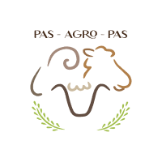

Changelog
Source:NEWS.md
Version 0.1.0 (Initial Development Version)
Concept and Development
- Initial conceptualization and development of the
pasagropasrpackage. - Established the package structure and basic functionality.
- Added the
lambBreedsdataset as a proof of concept. - Laid groundwork for future dataset additions and enhancements.
- Basic README and documentation created.
Stay tuned for upcoming updates and new features in future releases!
- For the latest development version, visit the GitHub repository: https://github.com/PAS-AGRO-PAS/pasagropasr/